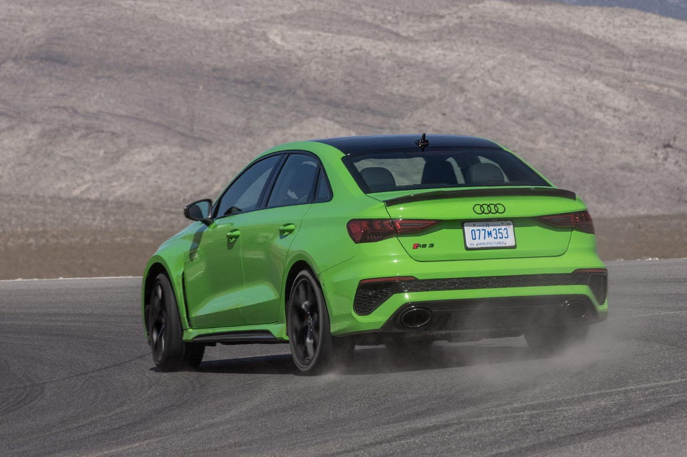
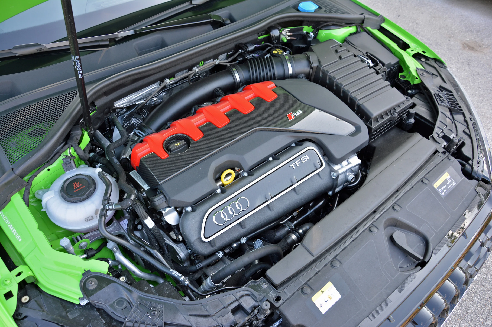
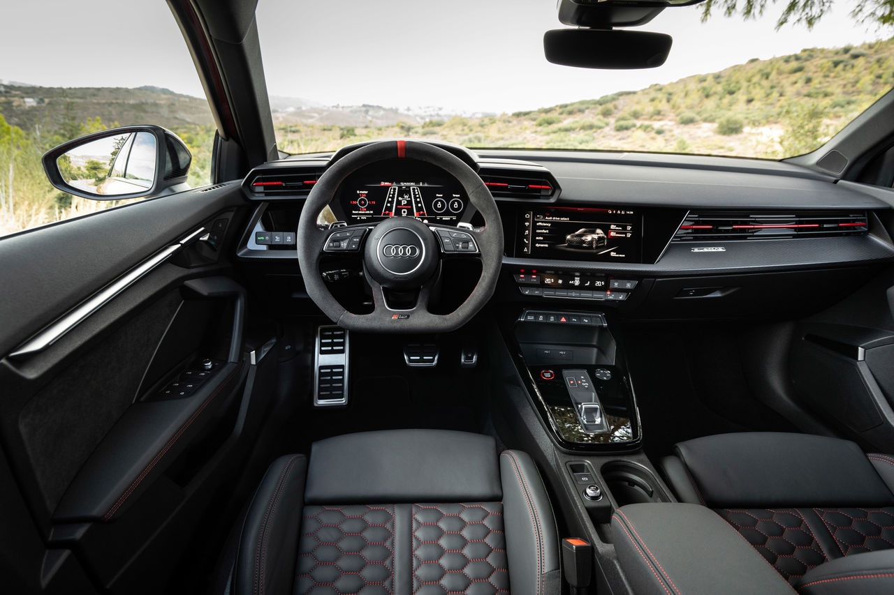

The new Audi RS3 is a high-performance compact luxury sedan that features chiseled styling and a unique five-cylinder engine that makes 401 horsepower.
With a potent 401-hp turbocharged five-cylinder engine, the 2022 Audi RS3 is the raciest version of the company's small luxury sedan. Based on the four-door Audi A3 and the sportier S3–but blessed with even more power and enhanced chassis tuning–the new RS variant challenges hi-po rivals such as the BMW M2 coupe and Mercedes-AMG CLA45 sedan. However, the RS3's unusual engine gives it one of the most distinct soundtracks in its class. The Audi's sharply creased sheetmetal as well as its stylish, nicely appointed interior help it appeal to audiences who appreciate sportiness as much as luxuriousness.
One of the most distinct elements of the RS3 is its unusual five-cylinder engine. Its odd number of cylinders gives it a unique thrumming soundtrack that was particularly pleasing on the outgoing model. The latest iteration is again a turbocharged 2.5-liter, but it now makes 401 horsepower. The engine pairs with a seven-speed dual-clutch automatic transmission that deliberately downshifts with slight throttle inputs, but it behaves less aggressively during hard braking. Its standard all-wheel-drive system includes a torque-vectoring rear differential with a drift mode.
Compared with the lesser A3 and S3, the sportiest 3 has upgraded brakes, a stiffer suspension setup, and a unique set of wheels on stickier performance tires.Plus, it was composed and comfortable when driven sedately on regular roads.
Inside, the RS3's passenger space is identical to the A3 and S3, but it has a set of more aggressively bolstered front seats. Audi endows all versions with a dashboard that looks anything but bland. A pair of high-mounted air vents face the driver and flank the instrument panel binnacle that houses a set of digital gauges. The RS3 is also available with a heads-up display. Below the center touchscreen are climate controls with physical buttons, and there's a bin below them that's integrated into the center console. Unfortunately, drivers have to select gears via a weird, stubby shifter; paddles on the steering wheel are an alternative once the RS3 is in motion.
VEHICLE TYPE
front-engine, all-wheel-drive, 5-passenger, 4-door sedan
BASE PRICE
$59,995
ENGINE
turbocharged and intercooled DOHC 20-valve inline-5, aluminum block and head, port and direct fuel injection
POWER
401 hp @ 6500 rpm
TORQUE
369 lb-ft @ 3500 rpm
TRANSMISSION
7-speed dual-clutch automatic
PERFORMANCE (C/D EST)
60 mph: 3.3 sec
100 mph: 8.4 sec
1/4-Mile: 11.8 sec
Top Speed: 159 mph
EPA FUEL ECONOMY (C/D EST)
Combined/City/Highway: 23/20/29 mpg